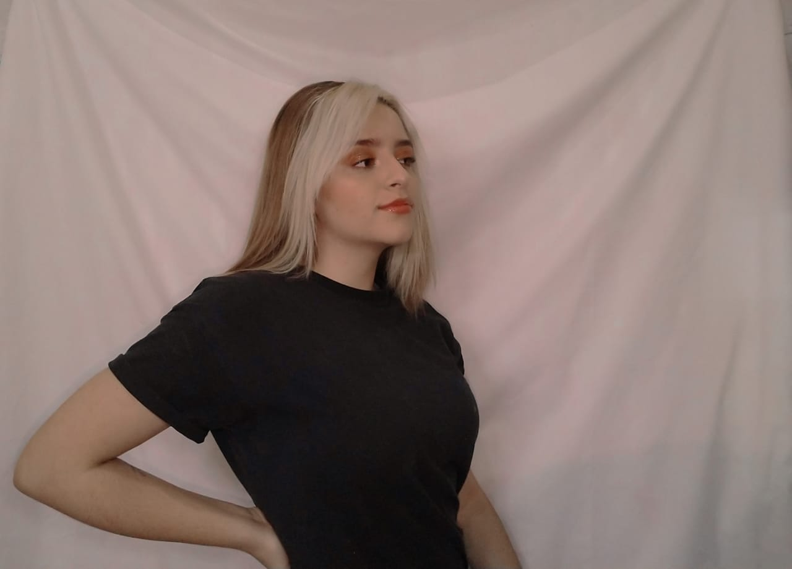
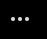

Inicio
¿Qué está pasando?
¡Bienvenido a twitter!
Este es el mejor lugar para ver lo que está pasando en el mundo. Busca personas y temas para seguir ahora.
Estefania Anaya
@steffSTAY0325
 Inicio
¿Qué está pasando?
Este es el mejor lugar para ver lo que está pasando en el mundo. Busca personas y temas para seguir ahora.